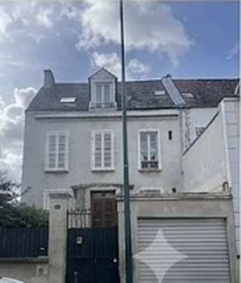
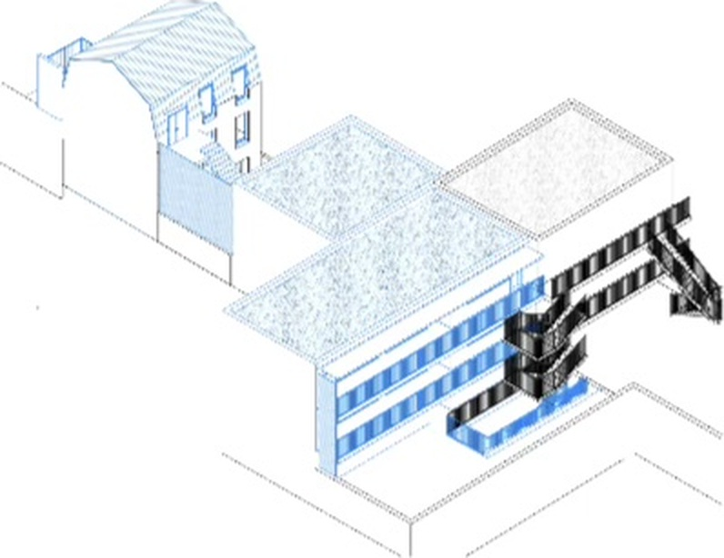

École Chambertin · 14 rue Steffen · Asnières-sur-Seine
L’École Chambertin rouvre en septembre 2027.
Un CP, un CE1-CE2 et un CM1-CM2 accueilleront les élèves pour la première rentrée de la réouverture.
Trois classes pour la première rentrée
CP — Une année fondatrice
Lire, écrire, compter, raisonner et prendre les premiers repères du travail scolaire.
CE1-CE2 — Consolider pour aller plus loin
Approfondir les fondamentaux, enrichir les connaissances et gagner en précision.
CM1-CM2 — Approfondir et préparer la suite
Structurer les connaissances et les habitudes de travail avant l’entrée au collège.
Les programmes nationaux, notre liberté pédagogique et de vie scolaire
L’École Chambertin suivra les programmes officiels de l’Éducation nationale. Ils fixent les connaissances et les compétences attendues à chaque niveau.
Son statut privé hors contrat lui donnera la liberté d’organiser les enseignements et la vie scolaire en cohérence avec le projet du Cours Chambertin. Cette liberté ne diminue pas les attendus : elle engage l’établissement à expliquer ses objectifs, à suivre les progrès et à rendre compte du travail accompli.
Conduire chaque élève vers l’étape suivante
Les premières années de la scolarité sont déterminantes. L’École a la responsabilité d’y poser des fondations solides et d’intervenir lorsque les acquis restent fragiles.
Elle fixe les repères, enseigne, observe les progrès et reprend les apprentissages nécessaires. L’enfant n’est pas laissé seul face à l’injonction de « devenir autonome ». Il apprend progressivement à tenir sa place d’élève, à fournir un effort et à prendre soin de son travail.
Le 14 rue Steffen
La réouverture est rendue possible par l’acquisition d’une maison voisine du Collège. Les travaux d’aménagement s’y poursuivent jusqu’à l’été 2027.


Une école en préparation
Les locaux sont en cours de transformation. Le site distingue ce qui est déjà décidé — l’histoire, les niveaux ouverts, le cadre éducatif et la procédure de rencontre — de ce qui reste en cours de finalisation.
Avant l’achèvement des travaux, les rendez-vous individuels ne sont pas présentés comme des visites de l’École.
Une école qui appartient à une histoire
L’École a existé dès la fondation du Cours Chambertin, puis a fermé dans les années 1990. En 2027, elle retrouve sa place au sein de l’institution.
Une rencontre individuelle avant toute démarche d’admission
Choisir une école suppose de comprendre ce qu’elle attend, ce qu’elle propose et la responsabilité qu’elle assume.
Le rendez-vous individuel permet à la direction de présenter le projet de l’École, de répondre aux questions et d’échanger sur la situation de l’enfant. Les étapes suivantes de la demande d’admission sont expliquées à l’issue de cet entretien.